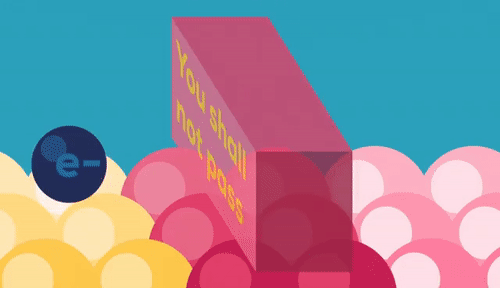
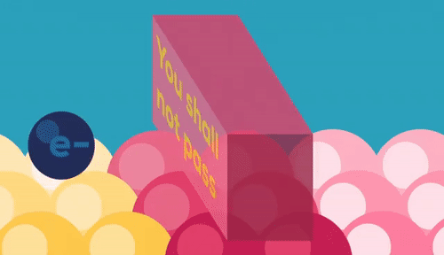

Information
- Topic: Quantum Tunneling Effect
- Year Discoverd :: 1896
- Discoverd By: Henri Becquerel
- Wikipedia Link: https://en.wikipedia.org/wiki/Quantum_tunnelling
Abstract of Quantum Tunneling Effect :
Quantum tunnelling or tunneling (US) is the quantum mechanical phenomenon where a wavefunction
can propagate through a
potential barrier. The transmission through the barrier can be finite and depends exponentially on the barrier height
and barrier width.
The wavefunction does not disappear on one side and reappear on the other side. The wavefunction and
its first derivative are continuous. In steady-state, the probability flux in the forward direction is spatially
uniform. No particle or wave is lost.
Quantum tunneling is not predicted by the laws of Classical mechanics where surmounting a
potential barrier requires enough potential energy.
Quantum tunnelling plays an essential role in several physical phenomena, such as the nuclear fusion that occurs in main
sequence stars like the Sun. It has important applications in the tunnel diode, quantum computing, and in the
scanning tunnelling microscope. The effect was predicted in the early 20th century, and its acceptance as a general
physical phenomenon came mid-century.